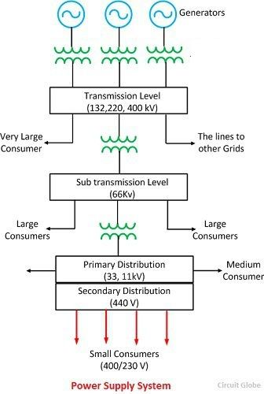

⚡ Power Track
📐 Power Systems Analysis
This section lays the foundation for understanding how electrical power flows through systems, how it's modeled mathematically, and how engineers analyze, design, and troubleshoot power systems.
🔌 1. Basic Components of Power Systems
- Generators: Convert mechanical energy into electrical energy
- Transformers: Step-up/down voltage for transmission and distribution
- Transmission Lines: Carry high-voltage electricity over long distances
- Distribution Networks: Deliver power to end-users
- Loads: Represent energy-consuming devices (resistive, inductive, capacitive)
A power system is usually split into generation, transmission, and distribution sections.
🔄 2. Single Line Diagrams (SLD)
Single-line diagrams simplify complex 3-phase power systems into a single-phase equivalent:

Use SLDs to perform load flow, fault analysis, and protection coordination easily.
📏 3. Per-Unit System
Normalize all quantities to a common base. It simplifies calculations and comparison across devices.
Per Unit = Actual Value / Base Value
- Base Power (Sbase): Typically 100 MVA
- Base Voltage (Vbase): Chosen per system level
Example: Given base S = 100 MVA, V = 132 kV. A transformer with 5.5% impedance has:
Zpu = 0.055
⚡ 4. Load Flow Analysis
It determines voltages, currents, and power at various buses.
- Methods: Gauss-Seidel, Newton-Raphson, Fast-Decoupled
- Inputs: Bus types (Slack, PV, PQ), impedance, generation/load data
- Outputs: Bus voltages, line flows, power losses
Bus classification is essential for solving load flow equations.
⚠️ 5. Fault Analysis
Studies abnormal conditions like short circuits.
- Types: 3-phase, single line-to-ground (SLG), double line-to-ground (DLG), line-to-line
- Tools: Symmetrical components, Thevenin equivalents, sequence networks
Example: SLG fault at Bus 3:
If = 3·Vf / (Z1 + Z2 + Z0)
🧮 6. Power Factor & Losses
Power factor (PF) is the cosine of angle between voltage and current.
PF = P / S = cos(φ)
- PF = 1 → purely resistive load
- Lagging PF → inductive loads (motors)
- Leading PF → capacitive loads
Correct low PF using capacitor banks to reduce line current and losses.
🧠 7. Practice Quiz
Q1: What are the types of buses in load flow analysis?
Answer: Slack, PV (Generator), PQ (Load)
Q2: Why is per-unit system used?
Answer: To simplify and normalize system calculations.
Q3: How do you find fault current for a single line-to-ground fault?
Answer: Use If = 3V / (Z1 + Z2 + Z0)